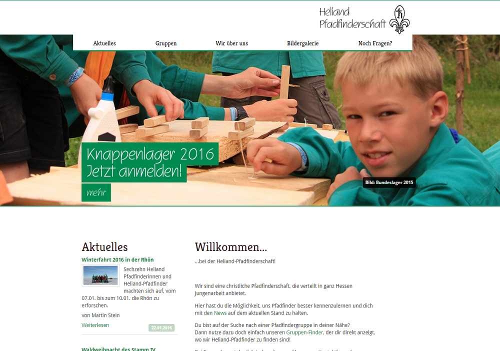

Heliand-Pfadfinderschaft.de
Zur Seite

Ich bin Pfadfinder bei der Heliand-Pfadfinderschaft in Frankfurt.
In einem Team aus gut 10 Personen wurde die Webseite, die der Information
und Öffentlichkeitsarbeit dient, über ein Jahr neu gestaltet.
Im Hintergrund läuft die Seite auf dem flexiblen Typo3-CMS, wobei einige
Extensions und das Theme von der Homepage des Dachverbands übernommen wurde.
Ich habe mich besonders dem Design und Layout gewidmet und beispielsweise
das Theme angepasst.
Des Weiteren verwalte ich Teile der Seite.